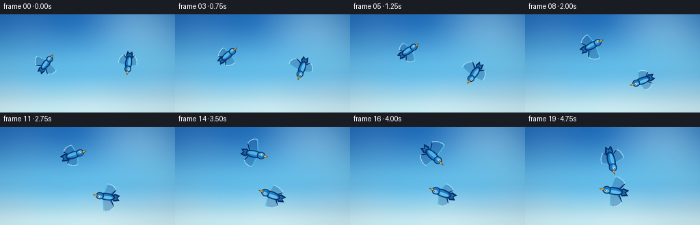
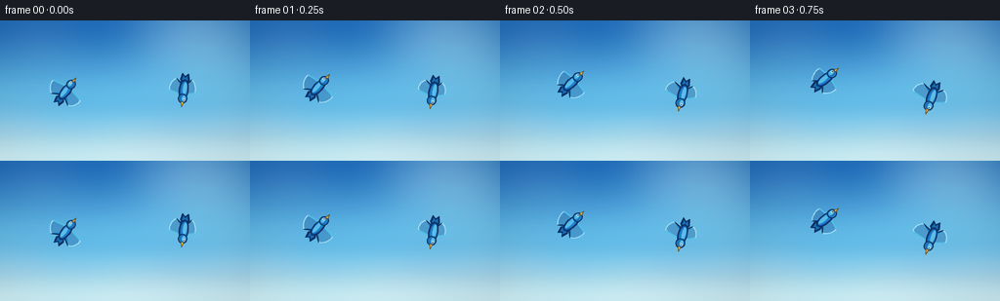
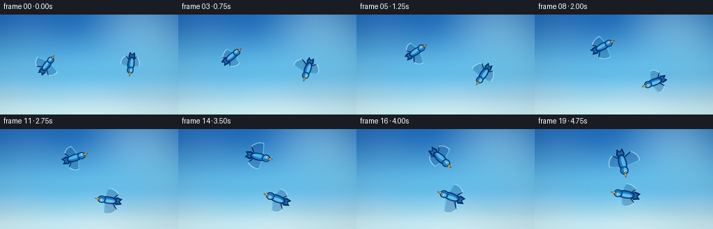
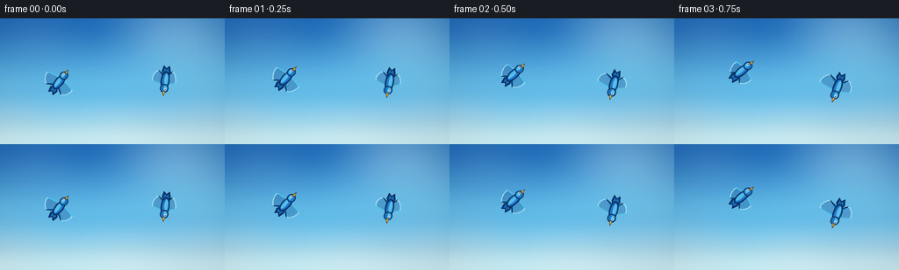

CODING AGENTS AS PIXEL WORLD MODELS
traex/DeepSeek-V4.1-Flash · instance_preservation_0018
点击播放 · 原生 RGB 像素
逐轮保存的候选
回放视频、检查图与代码变化。
每份候选均可单独播放。实际图片检查记录在下方工具轨迹中。
候选 01播放与检查图
点击播放 · 原生 RGB 像素


展开代码变化
--- 上一保存版本
+++ 本次保存版本
@@ -0,0 +1,319 @@
+from pathlib import Path
+import math
+
+import numpy as np
+from PIL import Image, ImageDraw, ImageFilter
+
+import artifact_io
+
+
+CASE_DIR = Path(__file__).resolve().parent
+WIDTH = 256
+HEIGHT = 144
+FRAMES = 20
+FPS = 4.0
+SS = 4 # Supersampling factor for clean feathers and silhouettes.
+
+
+def smoothstep(x):
+ x = np.clip(x, 0.0, 1.0)
+ return x * x * (3.0 - 2.0 * x)
+
+
+def lerp(a, b, t):
+ return a + (b - a) * t
+
+
+def build_sky(width, height):
+ """Paint a clear, high-key daytime sky with a warm sun and cool horizon."""
+ y = np.linspace(0.0, 1.0, height, dtype=np.float32)[:, None, None]
+ x = np.linspace(0.0, 1.0, width, dtype=np.float32)[None, :, None]
+
+ top = np.array([31, 105, 181], dtype=np.float32)
+ middle = np.array([92, 177, 222], dtype=np.float32)
+ low = np.array([190, 226, 236], dtype=np.float32)
+ first = smoothstep(y / 0.56)
+ second = smoothstep((y - 0.56) / 0.44)
+ color = top * (1.0 - first) + middle * first
+ color = color * (1.0 - second) + low * second
+ color = np.broadcast_to(color, (height, width, 3)).copy()
+
+ # Sunlight from the upper right gives the clouds and birds a coherent key light.
+ dx = (x - 0.82) / 0.44
+ dy = (y - 0.10) / 0.56
+ sun = np.exp(-(dx * dx + dy * dy) * 3.3)
+ color += sun * np.array([58.0, 45.0, 20.0], dtype=np.float32)
+
+ # A subtle diagonal air-current sheen keeps the background from feeling flat.
+ sheen = np.exp(-((x * 0.66 + y * 0.34 - 0.50) / 0.22) ** 2)
+ color += sheen * np.array([5.0, 8.0, 7.0], dtype=np.float32)
+
+ # Very light vignette and a little grain keep the tiny frame from banding.
+ radial = ((x - 0.5) * 1.10) ** 2 + ((y - 0.48) * 0.82) ** 2
+ color *= 1.0 - 0.065 * smoothstep(radial / 0.54)
+ rng = np.random.default_rng(20261110)
+ color += rng.normal(0.0, 1.35, (height, width, 1)).astype(np.float32)
+ return np.clip(color, 0, 255).astype(np.uint8)
+
+
+def cloud_mask(width, height, seed, clusters, blur_radius):
+ rng = np.random.default_rng(seed)
+ layer = Image.new("L", (width, height), 0)
+ draw = ImageDraw.Draw(layer)
+ for cx, cy, spread_x, spread_y, puffs, size in clusters:
+ for _ in range(puffs):
+ ox = rng.normal(0.0, spread_x) * width
+ oy = rng.normal(0.0, spread_y) * height
+ rx = rng.uniform(0.65, 1.45) * size * width
+ ry = rng.uniform(0.45, 0.95) * size * width
+ x = cx * width + ox
+ y = cy * height + oy
+ draw.ellipse((x - rx, y - ry, x + rx, y + ry), fill=135)
+ return layer.filter(ImageFilter.GaussianBlur(blur_radius))
+
+
+def make_clouds():
+ """Create two wide layers so a slow crop gives natural parallax."""
+ width = (WIDTH + 24) * SS
+ height = HEIGHT * SS
+ high = cloud_mask(
+ width,
+ height,
+ 41,
+ [
+ (0.16, 0.17, 0.055, 0.030, 9, 0.047),
+ (0.62, 0.11, 0.050, 0.026, 8, 0.040),
+ (0.90, 0.26, 0.045, 0.025, 7, 0.036),
+ ],
+ 18 * SS,
+ )
+ low = cloud_mask(
+ width,
+ height,
+ 73,
+ [
+ (0.10, 0.78, 0.060, 0.035, 10, 0.065),
+ (0.52, 0.91, 0.075, 0.032, 10, 0.058),
+ (0.88, 0.76, 0.055, 0.038, 9, 0.061),
+ ],
+ 25 * SS,
+ )
+
+ high_rgba = Image.new("RGBA", (width, height), (239, 249, 252, 0))
+ high_rgba.putalpha(high.point(lambda value: int(value * 0.29)))
+ low_rgba = Image.new("RGBA", (width, height), (246, 251, 251, 0))
+ low_rgba.putalpha(low.point(lambda value: int(value * 0.52)))
+ return high_rgba, low_rgba
+
+
+def transform(points, cx, cy, angle, scale):
+ c = math.cos(angle)
+ s = math.sin(angle)
+ out = []
+ for px, py in points:
+ x = px * scale
+ y = py * scale
+ out.append((cx + (x * c - y * s) * SS, cy + (x * s + y * c) * SS))
+ return out
+
+
+def ellipse_points(cx, cy, rx, ry, count=32):
+ return [
+ (cx + rx * math.cos(2.0 * math.pi * i / count),
+ cy + ry * math.sin(2.0 * math.pi * i / count))
+ for i in range(count)
+ ]
+
+
+def draw_shape(draw, points, fill, outline=None, width=1):
+ if outline is not None:
+ draw.polygon(points, fill=fill)
+ draw.line(points + [points[0]], fill=outline, width=max(1, int(width * SS)), joint="curve")
+ else:
+ draw.polygon(points, fill=fill)
+
+
+def shade(color, amount):
+ return tuple(int(np.clip(c * amount, 0, 255)) for c in color)
+
+
+def draw_bird(layer, cx, cy, angle, scale, flap, roll, palette_shift=0):
+ """Draw a bluebird from above, with a tapered body and layered flight feathers."""
+ draw = ImageDraw.Draw(layer)
+ outline = (7, 35, 75, 235)
+ body_dark = shade((17, 73, 145), 1.0 + palette_shift)
+ body_mid = shade((35, 126, 204), 1.0 + palette_shift)
+ body_light = shade((87, 191, 231), 1.0 + palette_shift)
+ wing_dark = shade((17, 80, 151), 1.0 + palette_shift)
+ wing_mid = shade((30, 133, 207), 1.0 + palette_shift)
+ wing_light = shade((79, 195, 231), 1.0 + palette_shift)
+ wing_tip = shade((190, 237, 247), 1.0 + palette_shift)
+ gold = (241, 177, 58, 255)
+
+ def pts(local):
+ return transform(local, cx, cy, angle, scale)
+
+ # Forked tail, slightly darker than the mantle.
+ tail = [(-8, -2), (-14, -6), (-22, -4), (-18, 0), (-22, 4), (-14, 6), (-8, 2)]
+ draw_shape(draw, pts(tail), (9, 53, 113, 255), outline, 0.85)
+ tail_inner = [(-9, -1.5), (-14, -3.8), (-19, -2.4), (-16, 0), (-19, 2.4), (-14, 3.8), (-9, 1.5)]
+ draw_shape(draw, pts(tail_inner), shade(body_mid, 0.88))
+
+ # Two broad, swept wings. Their projected span and sweep change with the flap.
+ for side in (-1, 1):
+ span = 22.5 * (0.74 + 0.26 * (0.5 + 0.5 * math.cos(flap)))
+ sweep = 1.8 * math.sin(flap)
+ bank = 1.0 + side * 0.13 * roll
+ span *= bank
+ root_front = (5.0, side * 1.8)
+ root_back = (-8.5, side * 2.5)
+ tips = [
+ (0.8 + sweep, side * span),
+ (-4.8 + sweep * 0.6, side * span * 0.99),
+ (-10.2 + sweep * 0.2, side * span * 0.87),
+ (-15.0 - sweep * 0.4, side * span * 0.63),
+ ]
+ wing = [root_front] + tips + [root_back, (-3.2, side * 2.0)]
+ wing_color = wing_mid if side < 0 else shade(wing_mid, 0.92)
+ draw_shape(draw, pts(wing), shade(wing_dark, 0.72), outline, 1.0)
+
+ centroid = (
+ sum(p[0] for p in wing) / len(wing),
+ sum(p[1] for p in wing) / len(wing),
+ )
+ inner = [
+ (centroid[0] + (p[0] - centroid[0]) * 0.86,
+ centroid[1] + (p[1] - centroid[1]) * 0.86)
+ for p in wing
+ ]
+ draw_shape(draw, pts(inner), wing_color)
+
+ # Four long primary feathers, separated by quiet navy creases.
+ for j in range(3):
+ a = tips[j]
+ b = tips[j + 1]
+ crease = [root_front, a, b, (-2.5, side * 2.0)]
+ draw.polygon(pts(crease), fill=(17, 73, 142, 72))
+ draw.line(pts([a, b]), fill=(8, 52, 108, 155), width=max(1, int(0.9 * SS)))
+
+ # Pale leading edge and luminous primary tips.
+ draw.line(pts([root_front, tips[0]]), fill=wing_light + (225,), width=max(2, int(1.45 * SS)))
+ draw.line(pts(tips), fill=wing_tip + (205,), width=max(1, int(1.0 * SS)), joint="curve")
+ for j in (0, 1, 2, 3):
+ tip = tips[j]
+ tip_base = (
+ centroid[0] + (tip[0] - centroid[0]) * 0.82,
+ centroid[1] + (tip[1] - centroid[1]) * 0.82,
+ )
+ draw.line(pts([tip_base, tip]), fill=(145, 224, 244, 115), width=max(1, int(1.15 * SS)))
+
+ # Long mantle and rounded head make the silhouette read as a bird at this size.
+ body = ellipse_points(-1.0, 0.0, 13.0, 5.6, 36)
+ draw_shape(draw, pts(body), body_dark, outline, 1.05)
+ body_inner = ellipse_points(-0.5, -0.4, 11.2, 4.3, 32)
+ draw_shape(draw, pts(body_inner), body_mid)
+ mantle = ellipse_points(-2.4, -1.3, 8.5, 2.4, 28)
+ draw_shape(draw, pts(mantle), body_light + (165,))
+
+ head = ellipse_points(10.2, 0.0, 5.9, 5.5, 28)
+ draw_shape(draw, pts(head), shade(body_mid, 0.94), outline, 1.0)
+ crown = ellipse_points(10.0, -1.4, 3.6, 2.4, 24)
+ draw_shape(draw, pts(crown), body_light + (170,))
+
+ # Tiny warm beak and a crisp eye glint.
+ beak = [(14.7, -1.8), (21.1, 0.0), (14.7, 1.8)]
+ draw_shape(draw, pts(beak), gold, (92, 67, 22, 220), 0.75)
+ eye_outer = ellipse_points(11.8, -1.75, 1.45, 1.45, 18)
+ draw_shape(draw, pts(eye_outer), (235, 249, 248, 255))
+ eye_inner = ellipse_points(12.15, -1.75, 0.78, 0.78, 16)
+ draw_shape(draw, pts(eye_inner), (7, 27, 54, 255))
+ glint = ellipse_points(12.45, -2.05, 0.28, 0.28, 12)
+ draw_shape(draw, pts(glint), (255, 255, 248, 255))
+
+
+def bird_pose(t, bird):
+ ease = 0.68 * t + 0.32 * float(smoothstep(t))
+ center_x = 128.0 + 5.5 * math.sin(math.pi * t)
+ center_y = 72.0 + 3.2 * math.sin(2.0 * math.pi * t)
+ radius = 60.0 - 38.0 * ease
+
+ if bird == 0:
+ theta = math.pi + 0.50 * math.pi * ease
+ theta += 0.035 * math.pi * math.sin(2.0 * math.pi * t)
+ cx = center_x - 1.6 * ease
+ cy = center_y + 1.2 * math.sin(2.0 * math.pi * t)
+ scale = 0.78 + 0.20 * ease
+ phase = 0.0
+ palette_shift = 0.012
+ else:
+ theta = 0.50 * math.pi * ease
+ theta -= 0.035 * math.pi * math.sin(2.0 * math.pi * t)
+ cx = center_x + 1.6 * ease
+ cy = center_y - 1.2 * math.sin(2.0 * math.pi * t)
+ scale = 0.80 + 0.18 * ease
+ phase = 0.47
+ palette_shift = -0.006
+
+ x = cx + radius * math.cos(theta)
+ y = cy + radius * math.sin(theta)
+
+ # Analytic tangent of the quarter orbit, plus the gentle camera drift.
+ d_ease = 0.68 + 0.32 * 6.0 * t * (1.0 - t)
+ d_radius = -38.0 * d_ease
+ if bird == 0:
+ d_theta = 0.50 * math.pi * d_ease + 0.07 * math.pi * math.cos(2.0 * math.pi * t)
+ else:
+ d_theta = 0.50 * math.pi * d_ease - 0.07 * math.pi * math.cos(2.0 * math.pi * t)
+ vx = 5.5 * math.pi * math.cos(math.pi * t)
+ vx += d_radius * math.cos(theta) - radius * math.sin(theta) * d_theta
+ vy = 6.4 * math.pi * math.cos(2.0 * math.pi * t)
+ vy += d_radius * math.sin(theta) + radius * math.cos(theta) * d_theta
+ heading = math.atan2(vy, vx)
+
+ flap = 2.0 * math.pi * (2.55 * t + phase)
+ roll = math.sin(2.0 * math.pi * (0.82 * t + 0.13 * bird))
+ return x, y, heading, scale, flap, roll, palette_shift
+
+
+def render_frame(index, sky, clouds_high, clouds_low):
+ t = index / (FRAMES - 1)
+ width = WIDTH * SS
+ height = HEIGHT * SS
+ frame = Image.fromarray(sky).convert("RGBA")
+
+ high_shift = int((1.5 + 5.0 * t) * SS)
+ low_shift = int((8.0 - 6.0 * t) * SS)
+ frame.alpha_composite(clouds_high.crop((high_shift, 0, high_shift + width, height)))
+ frame.alpha_composite(clouds_low.crop((low_shift, 0, low_shift + width, height)))
+
+ # A narrow atmospheric haze band at the bottom gives the sky depth.
+ haze = Image.new("RGBA", (width, height), (0, 0, 0, 0))
+ haze_draw = ImageDraw.Draw(haze)
+ haze_draw.rectangle((0, int(height * 0.84), width, height), fill=(228, 242, 242, 24))
+ haze = haze.filter(ImageFilter.GaussianBlur(10 * SS))
+ frame.alpha_composite(haze)
+
+ birds = Image.new("RGBA", (width, height), (0, 0, 0, 0))
+ # Far bird first, near bird second, preserving two clear bodies at the climax.
+ for bird in (1, 0):
+ x, y, angle, scale, flap, roll, shift = bird_pose(t, bird)
+ draw_bird(birds, x * SS, y * SS, angle, scale, flap, roll, shift)
+ frame.alpha_composite(birds)
+
+ result = frame.convert("RGB").resize((WIDTH, HEIGHT), Image.Resampling.LANCZOS)
+ arr = np.asarray(result).astype(np.float32)
+ arr = (arr - 127.5) * 1.025 + 127.5
+ arr = np.clip(arr, 0, 255).astype(np.uint8)
+ return arr
+
+
+def main():
+ sky = build_sky(WIDTH * SS, HEIGHT * SS)
+ clouds_high, clouds_low = make_clouds()
+ frames = [render_frame(i, sky, clouds_high, clouds_low) for i in range(FRAMES)]
+ frames = np.stack(frames, axis=0)
+ artifact_io.save(frames, CASE_DIR)
+
+
+if __name__ == "__main__":
+ main()
候选 02播放与检查图
点击播放 · 原生 RGB 像素


展开代码变化
--- 上一保存版本
+++ 本次保存版本
@@ -270,7 +270,8 @@
vy += d_radius * math.sin(theta) + radius * math.cos(theta) * d_theta
heading = math.atan2(vy, vx)
- flap = 2.0 * math.pi * (2.55 * t + phase)
+ # Three full beats place both birds in a broad-wing pose at the formation climax.
+ flap = 2.0 * math.pi * (3.0 * t + phase)
roll = math.sin(2.0 * math.pi * (0.82 * t + 0.13 * bird))
return x, y, heading, scale, flap, roll, palette_shift
可观测工具轨迹
实际执行的命令与返回图片。
命令 1exit 0
/bin/bash -lc "pwd && rg --files -g '"'!*.pyc'"' -g '"'!__pycache__'"' | sed -n '1,160p'"
命令 2exit 0
/bin/bash -lc "sed -n '1,240p' prompt.txt"
命令 3exit 0
/bin/bash -lc "sed -n '1,260p' GENERATION_RULES.md"
命令 4exit 0
/bin/bash -lc 'cat task_spec.json'
命令 5exit 0
/bin/bash -lc "sed -n '1,280p' artifact_io.py"
命令 6exit 0
/bin/bash -lc "sed -n '1,260p' player_template.html"
命令 7exit 0
/bin/bash -lc "ls -la && find . -maxdepth 2 -type f -printf '%p %s bytes\\n' | sort"
命令 8exit 1
/bin/bash -lc 'python generate.py'
命令 9exit 0
/bin/bash -lc 'python generate.py'
命令 10exit 0
/bin/bash -lc 'command -v chafa || command -v viu || command -v jp2 || command -v img2txt || true'
命令 11exit 0
/bin/bash -lc "ls -lh frames pixels.npz index.html inspection.png transition_check.png && python - <<'PY'
from PIL import Image
import numpy as np
for p in ['inspection.png','frames/00.png','frames/10.png','frames/19.png']:
im=np.asarray(Image.open(p).convert('RGB'))
print(p, im.shape, 'mean', im.mean((0,1)).round(1), 'std', im.std((0,1)).round(1), 'unique', len(np.unique(im.reshape(-1,3),axis=0)))
PY"命令 12exit 0
/bin/bash -lc "python - <<'PY'
from PIL import Image
import numpy as np
for i in range(20):
a=np.asarray(Image.open(f'frames/{i:02d}.png')).astype(int)
# Birds are saturated/dark blue versus the cyan sky.
mask=(a[:,:,2] > a[:,:,1]+2) & (a[:,:,0] < 100) & (a[:,:,1] < 145)
ys,xs=np.where(mask)
if len(xs):
print(f'{i:02d}: blue bbox=({xs.min():3d},{ys.min():3d})-({xs.max():3d},{ys.max():3d}) area={len(xs):4d}')
PY"命令 13exit 0
/bin/bash -lc "python - <<'PY'
from PIL import Image
import numpy as np
for i in [0,5,10,15,19]:
a=np.asarray(Image.open(f'frames/{i:02d}.png')).astype(int)
# Dark blue pixels are bird bodies and wing shadows; sky remains light.
mask=(a[:,:,0] < 75) & (a[:,:,1] < 125) & (a[:,:,2] < 185) & (a[:,:,2] > a[:,:,0] + 25)
ys,xs=np.where(mask)
print(i, (xs.min(),ys.min(),xs.max(),ys.max()), len(xs))
# Compact 64x36 brightness map for rough composition QA.
gray=a.mean(2).reshape(36,4,64,4).mean((1,3))
chars=' .:-=+*#%@'
print('\\n'.join(''.join(chars[min(9,int(v/256*10))] for v in row) for row in gray[::2]))
print()
PY"命令 14exit 0
/bin/bash -lc "python - <<'PY'
import numpy as np
from PIL import Image
import generate as g
def components(a, threshold=10):
m=np.asarray(a)[:,:,3] > threshold
h,w=m.shape; seen=np.zeros_like(m,bool); sizes=[]
for y,x in zip(*np.where(m & ~seen)):
if seen[y,x]: continue
stack=[(y,x)]; seen[y,x]=1; n=0
while stack:
yy,xx=stack.pop(); n+=1
for dy,dx in ((1,0),(-1,0),(0,1),(0,-1)):
ny,nx=yy+dy,xx+dx
if 0<=ny<h and 0<=nx<w and m[ny,nx] and not seen[ny,nx]:
seen[ny,nx]=1; stack.append((ny,nx))
if n>20: sizes.append(n)
return sorted(sizes, reverse=True)
for i in range(20):
t=i/(g.FRAMES-1)
layer=Image.new('RGBA',(g.WIDTH*g.SS,g.HEIGHT*g.SS),(0,0,0,0))
for bird in (1,0):
x,y,ang,scale,flap,roll,shift=g.bird_pose(t,bird)
g.draw_bird(layer,x*g.SS,y*g.SS,ang,scale,flap,roll,shift)
small=layer.resize((g.WIDTH,g.HEIGHT),Image.Resampling.LANCZOS)
print(f'{i:02d}', components(small))
PY"命令 15exit 0
/bin/bash -lc "python generate.py && python - <<'PY'
from PIL import Image
import numpy as np
from pathlib import Path
files=sorted(Path('frames').glob('*.png'))
frames=np.stack([np.asarray(Image.open(p).convert('RGB')) for p in files])
assert frames.shape==(20,144,256,3) and frames.dtype==np.uint8
# Ensure the sequence has motion and each frame is a real, non-blank image.
diffs=np.abs(frames[1:].astype(np.int16)-frames[:-1].astype(np.int16)).mean((1,2,3))
print('frames:',frames.shape)
print('luma range:',frames.mean(3).min(),frames.mean(3).max())
print('consecutive mean abs diff min/mean/max:',diffs.min().round(3),diffs.mean().round(3),diffs.max().round(3))
print('all unique colors:',[len(np.unique(f.reshape(-1,3),axis=0)) for f in frames[::5]])
print('pixels.npz bytes:',Path('pixels.npz').stat().st_size)
print('index.html bytes:',Path('index.html').stat().st_size)
PY"命令 16exit 0
/bin/bash -lc "python - <<'PY'
from PIL import Image
import numpy as np
from pathlib import Path
im=np.asarray(Image.open('frames/19.png').convert('RGB')).astype(int)
# Verify the last frame has two disconnected dark-blue bird silhouettes.
m=(im[:,:,0]<85)&(im[:,:,1]<150)&(im[:,:,2]>im[:,:,0]+22)
h,w=m.shape; seen=np.zeros_like(m,bool); comps=[]
for y,x in zip(*np.where(m)):
if seen[y,x]: continue
stack=[(y,x)]; seen[y,x]=1; n=0; x0=w;y0=h;x1=0;y1=0
while stack:
yy,xx=stack.pop(); n+=1;x0=min(x0,xx);y0=min(y0,yy);x1=max(x1,xx);y1=max(y1,yy)
for dy,dx in ((1,0),(-1,0),(0,1),(0,-1)):
ny,nx=yy+dy,xx+dx
if 0<=ny<h and 0<=nx<w and m[ny,nx] and not seen[ny,nx]:
seen[ny,nx]=1;stack.append((ny,nx))
if n>100: comps.append((n,(x0,y0,x1,y1)))
print('large bird components:',sorted(comps,reverse=True))
print('artifacts:',[(p,Path(p).exists(),Path(p).stat().st_size) for p in ['pixels.npz','index.html','inspection.png','transition_check.png','frames/00.png','frames/19.png']])
PY"命令 17exit 0
/bin/bash -lc "python - <<'PY'
import math
import generate as g
for i in [0,5,10,15,19]:
t=i/19
p=[]
for b in (0,1):
x,y,a,s,f,r,c=g.bird_pose(t,b)
p.append((x,y,s,math.degrees(a)))
print(f'{i:02d} sec={i/4:.2f}', 'bird0', tuple(round(v,2) for v in p[0]), 'bird1', tuple(round(v,2) for v in p[1]), 'distance', round(math.dist(p[0][:2],p[1][:2]),2))
PY"保存候选 2 份；完成命令 17 次；可验证图片返回 0 张。原始 API 响应与完整日志保留在本地。